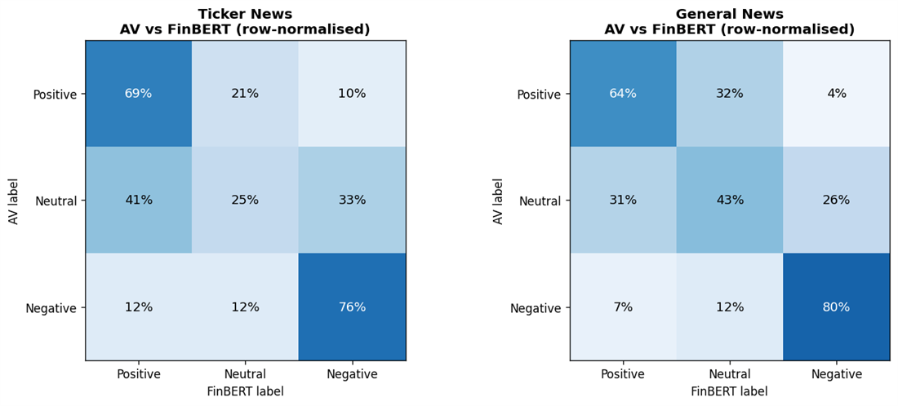
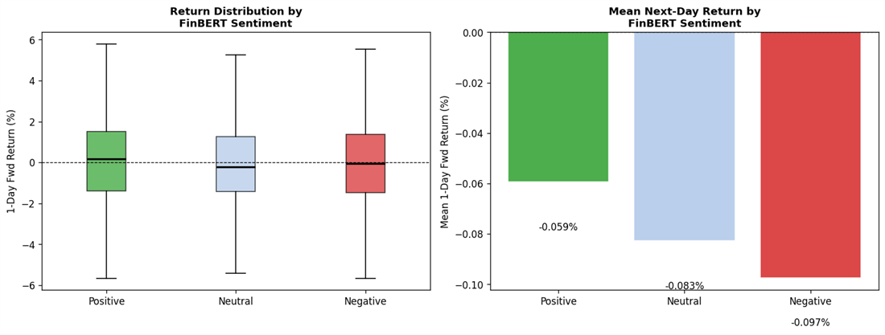
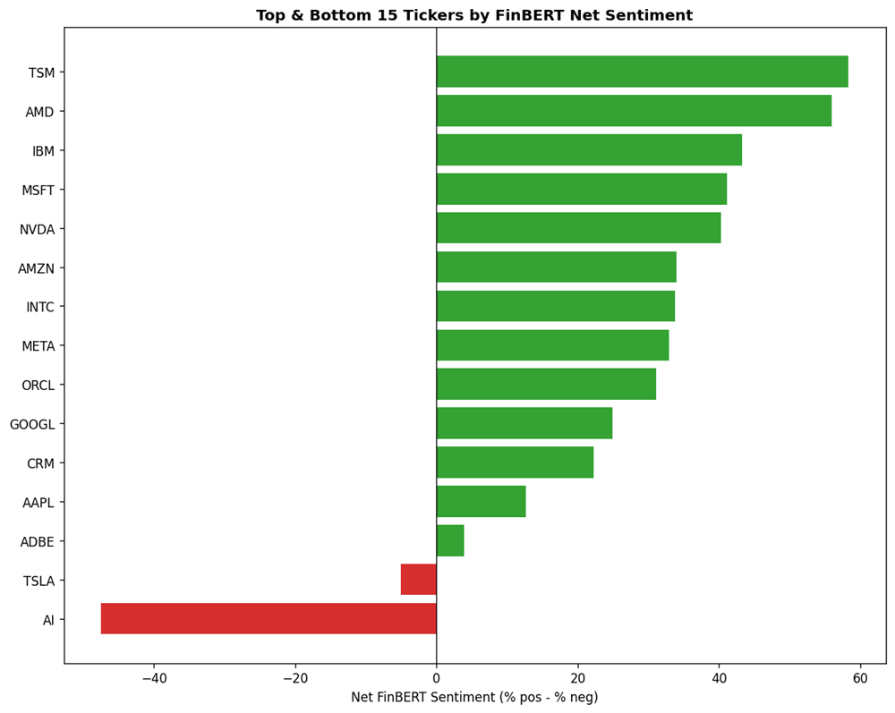

Graduate Capstone · California State Polytechnic University, Pomona
AI News Sentiment and Tech Stock Performance
Analyzed more than 64,000 financial news articles across 16 technology stocks and compared news-based and price-only models; the strongest approach reduced average prediction error by 31%.
- 64,000+ news articles
- 16 technology stocks
- 31% lower prediction error
Tools used:
Context & analytical question
Financial markets are widely considered difficult to predict because they are dynamic and information-efficient. This graduate capstone project asks a focused question: does incorporating financial news sentiment and topic-based features improve next-day stock return prediction relative to a baseline built only on historical price returns?
This was an independent academic capstone, not a client engagement. No business stakeholder or production use case is implied. The goal was to rigorously test whether a specific, well-defined signal (news sentiment) adds predictive value beyond price history alone.
Data
The dataset combines two Alpha Vantage news corpora with daily stock price data for a set of technology tickers, aggregated to a daily level per ticker:
- Ticker-specific news: articles tagged to an individual stock, joined with next-day price data (17,325 articles with matched sentiment labels).
- General financial news: broader market news not tied to a specific ticker (46,896 articles with matched sentiment labels).
Combined, the two corpora total more than 64,000 articles spanning news collected from January 2022 through late 2025, covering 16 technology tickers including AAPL, MSFT, NVDA, AMD, GOOGL, AMZN, META, and TSM. All data is public financial news and market data; no private, proprietary, or employer information is included.
Modeling features included lagged returns, sentiment aggregates (mean, median, count), sentiment extremes, and topic indicators, with the target defined as next-day return and careful temporal alignment to avoid data leakage.
Approach
- Collect ticker-specific and general financial news with Alpha Vantage sentiment labels
- Score every article with FinBERT, a transformer model fine-tuned for financial text
- Cross-check FinBERT output against Alpha Vantage's own sentiment labels
- Engineer lagged-return, sentiment, and topic features by ticker-day
- Train and compare regression models (Linear Regression, Lasso, Decision Tree) against a price-only baseline
FinBERT (ProsusAI/finbert) was applied to both corpora to classify each article as positive, negative, or neutral. To sanity-check this approach, FinBERT's output was compared against Alpha Vantage's own bundled sentiment labels using a normalized three-class scheme.
Visual analysis
Charts below are generated directly from the project's own analysis output.

Ticker-specific news skews more positive (55.3%) than broad market news (46.4%), which carries a larger neutral share. Company-specific coverage tends to run a more favorable tone than general market commentary.
{kind=link}

The two independent sentiment methods agreed on roughly 60% of articles overall (59.9% ticker news, 60.7% general news), with the strongest agreement at the positive and negative extremes. This cross-check gives moderate confidence in the sentiment labels used downstream.
{kind=link}

Positive-sentiment articles had a slightly less negative average next-day return (-0.059%) than neutral (-0.083%) or negative (-0.097%) articles, but the return distributions overlap heavily. A one-way ANOVA found no statistically significant difference between groups (F = 0.252, p = 0.777).
{kind=link}

Net sentiment (% positive − % negative articles) varied widely by company, from strongly positive coverage of TSM and AMD to net-negative coverage of Tesla and AI, showing that news tone is highly company-specific rather than uniform across the technology sector.
Results
Analyzed more than 64,000 financial news articles across 16 technology stocks and compared news-based and price-only models; the strongest approach reduced average prediction error by 31%.
This is the project's headline evaluation result, measured on held-out data. It reflects academic model evaluation, not a deployed or production system, and it does not represent trading returns, revenue, or any real-world financial outcome.
The exploratory sentiment analysis adds useful context to that headline number: statistical testing (one-way ANOVA and pairwise Welch t-tests) found no significant relationship between FinBERT sentiment category and next-day return in isolation. That nuance is consistent with the Efficient Market Hypothesis: publicly available sentiment on its own was a weak standalone signal, even though the strongest full modeling approach still outperformed the price-only baseline.
Skills demonstrated
Limitations & next steps
- Sentiment signal was weak in isolation; most of the modeling gain came from combining sentiment with other engineered features rather than sentiment alone.
- Alpha Vantage and FinBERT sentiment labels agreed on only about 60% of articles, indicating some measurement noise in the sentiment inputs.
- Findings are specific to the technology-stock tickers and time window covered by this dataset and are not verified to generalize to other sectors or periods.
Note Additional modeling detail (exact algorithm configurations, evaluation-metric definitions) is intentionally limited to what is verified in the supplied project files.